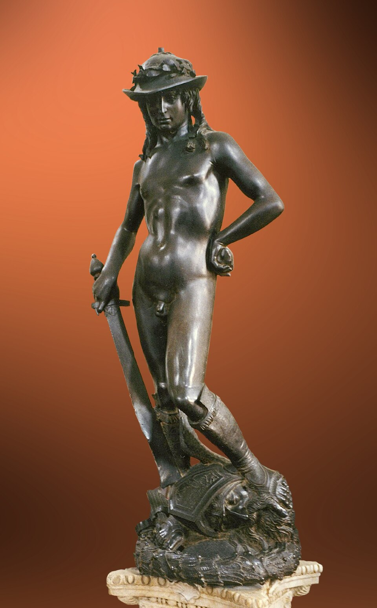

REGARDER L’ART · STORY
David — The most vulnerable is not the weakest

In the biblical account, Goliath is a formidable Philistine warrior who challenges the Israelites. No soldier dares face him. David, a young shepherd, volunteers. He is offered armour but takes it off because it restricts his movements. Armed with a sling and a few stones, he advances, convinced that God will help him. A stone strikes Goliath on the forehead and brings him down. David then takes the giant’s sword and cuts off his head. The young man whom nobody took seriously has won the fight.
Look closely at the sculpture: Donatello chooses the moment after the victory. David stands with one foot resting on Goliath’s head. The enormous sword recalls his opponent’s strength, while David’s youthful body heightens the contrast. But why is he naked, apart from his hat and boots? Donatello is not attempting a literal illustration of the story: he reinvents the hero through the nude, reconnecting with classical antiquity. Victory does not have the body of a giant here. It takes the form of an adolescent, both vulnerable and self-assured.